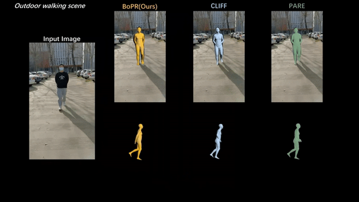
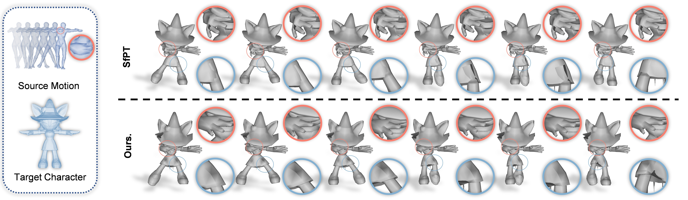
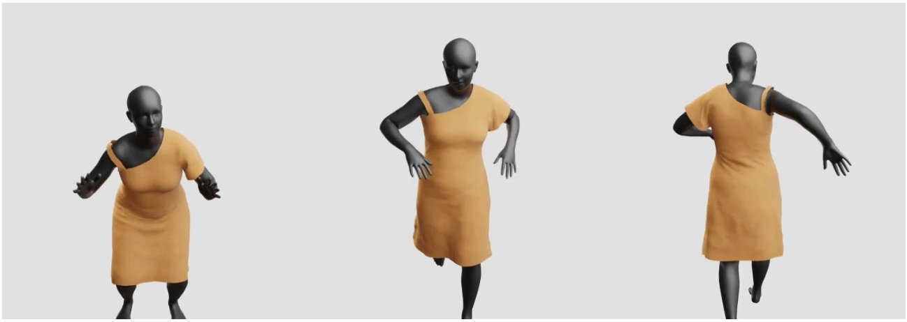

|  |
This paper presents a novel approach for estimating human body shape and pose from monocular images that effectively addresses the challenges of occlusions and depth ambiguity. |
 |
HMC shows a simple yet effective way of better handling local-part motions in the skeleton-free motion retaregting task, and it also fixes many failure cases in previous literature regarding small-part motions and local-motion interdependencies. |
 |
We introduce the first one-stage arbitrary hand reconstruction method using only a monocular RGB image as input. |
 |
This paper proposes an anchor-based deformation model, namely AnchorDEF, to predict 3D garment animation from a body motion sequence. |
 |
R2ET is a neural motion retargeting model that can preserve source motion semantics and avoid interpenetration in target motion. |
|
|
Last update: 2023.03.20 |